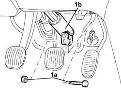
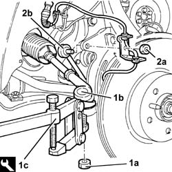
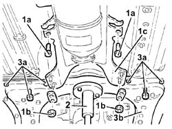
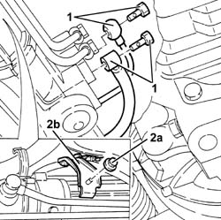
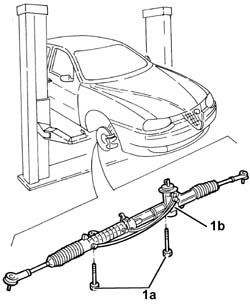

4130A10 power steering box - r+r - check tow-in if necessary separately - includes bleeding
- Path
- Procedures > 41 STEERING > 4130 POWER ASSISTED STEERING > 4130A power steering box > 4130A10 power steering box - r+r - check tow-in if necessary separately - includes bleeding
- Kind
- repair procedure (removal / refitting; the operation number is the code)
- Applies to
- all engines; all production periods
- Interactive page
- https://sloeber94.github.io/elrnDB-a156/en/#/3238129
Applies to: all engines; all production periods
 Removing
Removing
 Refitting
RefittingPlace the car on a ramp with the wheels perfectly straight.
Mark the position of the steering wheel in relation to the upper steering column shroud.
Drain the power steering fluid from the reservoir using a suitable syringe.
1. Undo the fixing bolt (1a) and disconnect the lower steering control shaft (1b) from the power steering box.

Applies to: all engines; all production periods
4450B12 front or rear wheels (two) - r+r
7055B64 Engine compartment DUST shield in front wheel arch (one), left or right - R.R.
1. Undo nut (1a) and disconnect steering links (1b) from the wheel struts using tool (1c).
 | Name | Country |
|---|---|---|
1c | Extractor | 1.821.169.000 |
2. Undo nut (2a) and disconnect rods (2b) from the lower suspension forks.

Applies to: all engines; all production periods
Proceed with the removal 1008A44 rear rigid mount - r r bearing in mind that there is a different set of specific operations for each version.
1. Undo the bolts (1a) and nuts (1b) of the gearlever and handbrake lever mount (1c).
2. Position a hydraulic jack complete with suitable bracket and secure it to the suspension crossmember.
3. Undo the bolts (3a) securing the front suspension beam (3b) to the body, then lower as required using the hydraulic jack.

Applies to: all engines; all production periods
Working from the left front wheelarch, unhook the power steering pipe collar.
1. Disconnect the fluid inlet and outlet connectors from the power assisted steering box.
2. Undo nut (2a) and remove mounting bracket (2b) complete with gear selector/engagement cables from the power steering box.

Applies to: all engines; all production periods
1. Undo the bolts (1a) and remove the power steering box (1b) by withdrawing from the right wheel arch.

Applies to: all engines; all production periods
Refitting
RemovingFit the power steering box and secure to the suspension beam by tightening the bolts to the recommended torque.
 | Fastening | Component | Ø | Value (daNm) |
|---|---|---|---|---|
- | Bolt | POWER STEERING BOX | M14 | 12.4 - 13.7 |
Place the mounting bracket back in its housing complete with gear selector/engagement cables (1b) and secure it to the steering box with the relevant nut.
Connect the oil inlet pipe connector to the power steering box and tighten it to torque.
| Fastening | Component | Ø | Value (daNm) |
|---|---|---|---|---|
- | Connector | PIPE BTWN PUMP + POWER STEERING BOX | M14 | 3.8 - 4.2 |
Connect the oil outlet pipe connector to the power steering box and tighten it to torque.
| Fastening | Component | Ø | Value (daNm) |
|---|---|---|---|---|
- | Connector | PIPE FROM POWER STEERING BOX/EXCHANGER | M12 | 2.8 - 3.2 |
Working from the left front wheel arch, connect the power steering hose to the collar.
Place the front suspension crossmember in its housing secure to the body by tightening the bolts to the recommended torque.
| Fastening | Component | Ø | Value (daNm) |
|---|---|---|---|---|
- | Bolt | ENGINE OR ROD ANCHORAGE BEAM | M12 | (Bodyshell side) 10.8 - 13.2 |
Tighten the bolts and nuts securing the gearlever and handbrake lever mount to the body.
Applies to: all engines; all production periods
Proceed with the refitting 1008A44 rear rigid mount - r r bearing in mind that there is a different set of specific operations for each version.
Connect the rods to the lower suspension forks with the relevant nuts tightened to torque,
| Fastening | Component | Ø | Value (daNm) |
|---|---|---|---|---|
- | Nut | FRONT ANTI-ROLL BAR JOINT BUSHES | M10 | 3.8 - 4.7 |
Connect the steering links to the wheel struts and secure by tightening the nut to the specified torque.
| Fastening | Component | Ø | Value (daNm) |
|---|---|---|---|---|
- | Nut | ADJUSTABLE STEERING LINKS | M10 | 2.9 - 3.6 |
7055B64 Engine compartment DUST shield in front wheel arch (one), left or right - R.R.
4450B12 front or rear wheels (two) - r+r
Connect the lower steering shaft to the power steering box and secure by tightening the bolt to the specified torque.
| Fastening | Component | Ø | Value (daNm) |
|---|---|---|---|---|
- | Bolt | STEERING SHAFT JOINTS | M8 | 1.9 - 2.1 |
Fill the power steering circuit with the recommended fluid.
 | Type | Component | Name | Qty. |
|---|---|---|---|---|
- | Fluid | POWER ASSISTED STEERING CIRCUIT | TUTELA GI/A | - |
Bleed the power steering system as described below
With the front wheels raised off the ground, with the engine switched off turn the steering wheel to full lock, left and right, 4-5 times.
Check and, if necessary, top up the fluid level in the reservoir. - Position the vehicle on the ground and start up the engine.
Carry out 4 - 5 complete steering wheel rotation cycles (right and left).
Top up the fluid level in the reservoir.
Topics linked from this page (3)
- 1008A44 rear rigid mount - r r
- 4450B12 front or rear wheels (two) - r+r
- 7055B64 Engine compartment DUST shield in front wheel arch (one), left or right - R.R.
Topics that link to this page (8)
- H10 STEERING HARD / (STEERING IN BOTH DIRECTIONS)
- H11 STEERING HARD / (IN ONE DIRECTION ONLY)
- H12 STEERING TOO SENSITIVE
- H20 STEERING WHEEL OSCILLATIONS/ VIBRATIONS / WHILST DRIVING
- S45 NOISE' FRONT / ROUND BENDS
- S46 NOISE' FRONT / AT TAKE-OFF
- X30 POWER ASSISTED STEERING SYSTEM FLUID LEAKS
- 4130A13 POWER ASSISTED STEERING BOX - R.R. - If necessary. check wheel toe in separately - Includes. bleeding air - on right hand drive versions